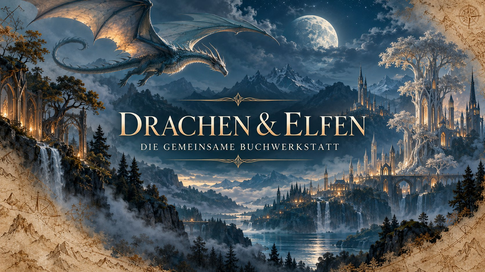

Idee einreichen
Figur, Weltregel, Szene oder Plotgedanke werden als nachvollziehbare Ideenkarte erfasst.

Gemeinsam schreiben, klar entscheiden
Jeder Vorschlag bleibt sichtbar. Erst eine gemeinsame Entscheidung macht daraus einen festen Bestandteil der Geschichte.
Figur, Weltregel, Szene oder Plotgedanke werden als nachvollziehbare Ideenkarte erfasst.
Beide Autoren betrachten Auswirkungen auf Figuren, Welt, Plot, Stil und spätere Kapitel.
Angenommene Ideen werden protokolliert und in allen betroffenen Projektdateien synchronisiert.
Aktueller Stand
Prämisse, Zielgruppe, Perspektive sowie die Regeln für Drachen, Elfen und Magie werden gemeinsam festgelegt.
Kernidee, Drachen, Elfen, Hauptkonflikt und Hauptfiguren.
Die Kapitelarbeit beginnt nach dem gemeinsamen Grundkonzept.
Dein Beitrag
Fülle die Ideenkarte aus. Beim Absenden öffnet sich GitHub mit einem fertigen Vorschlag. Dort musst du nur noch auf Submit new issue klicken.
Du brauchst ein GitHub-Konto und Zugriff auf das Repository. Die Idee ist zunächst ein Vorschlag und wird erst nach gemeinsamer Entscheidung zum Kanon.